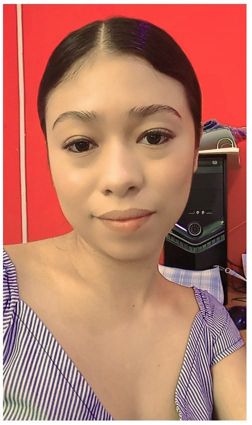

Mi nombre es alondra ventura Vicente nací el 15 de octubre del año 2001 en la cd de tecolutilla Comalcalco tabasco. Mis padres son Robert Ventura Méndez y María Asunción Vicente Rodríguez. Tengo 3 hermanas, Kenia, Citlali, vasti yareth y un hermano Santiago. Estudie el prescolar en el jardín de niños Fernando montes de oca me gustaba demasiado ir al prescolar ya que jugaba demasiado con mis amigos y solían comprarme muchas golosinas. tiempo más tarde estudie la primaria en la escuela José Vasconcelos en la cual obtuve experiencias nuevas. La secundaria la estudie en la técnica número 8 y después ingrese a la preparatoria en el plantel numero 20 de colegio de bachilleres Algo que ha despertado en mi demasiado interés o entusiasmo en el trascurso de la carrera son las redes, aunque no poseo conocimientos impactantes. Me gustaría aprender un poco más sobre los lenguajes de programación hablando en general ya que no conozco al 100% como funciona cada lenguaje.
Manejo del gestor de base de datos MySQL. Manejo de los lenguajes de programación java y c (50%). Manejo de la herramienta SketchUp (herramienta que nos permite crear modelos 3D).
Mi objetivo primordial como profesional obtener conocimientos eficientes sobre las redes para después emplearlo ya sea en una empresa o inclusive en un negocio propio.
Me he analizado y creo que poseo las siguientes habilidades .Habilidad para trabajar en equipo, entusiasmo, pensamiento creativo y capacidad para adaptarse a los cambios.Hay una frase muy bonita ya la vez muy interesante la cual dice “En el ámbito de la Ingeniería, se conoce como Ingeniero de Sistemas al profesional que se dedica a estudiar los si...” Es por ello que me propongo a dar lo mejor de mi para lograr todas esas metas las cuales me he propuesto.
